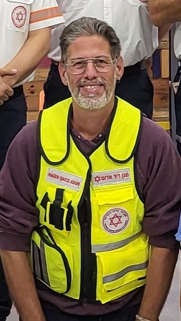

רונן אנגל
רונן אנגל בן 54 נחטף עם אשתו קרינה ושתי בנותיו מיקה ויובל.
אשתו ובנותיו חזרו אחרי עסקת חטופים, שבוע לאחר מכן נודע להם על מותו.
רונן היה חובש רפואת חירום מתנדב מד"א במרחב הנגב. קצת לפני ה7.10 הוא סיים לימודי חוץ בנושא קווי מים, בקיבוץ הוא עסק בלול ובחידוש רהיטים.
רונן ניסה להגן על משפחתו והלך להילחם במחבלים שפרצו לקיבוץ. בסופו של דבר כאשר המחבלים פרצו לביתו הם העלו תמונת חגיגה בפייסבוק מהטלפון של רונן.
אחיו של רונן מספר "נכנסתי לפייסבוק של רונן ואני רואה בסטורי שלו מחבל נתעב מחייך למצלמה ואומר משהו בערבית, התפרקתי באותו רגע".
גופתו של רונן עדיין מוחזקת בעזה.